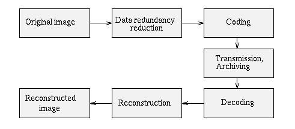
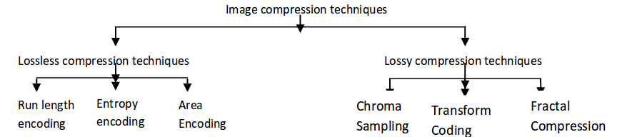
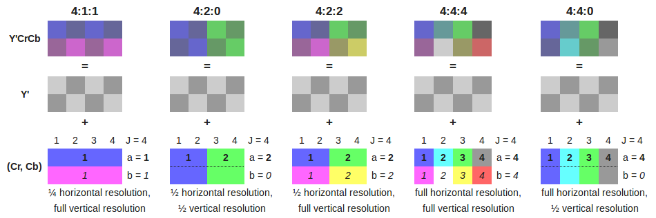

Kompresi merupakan teknik untuk mereduksi ukuran file dengan melibatkan encoding menggunakan bits yang lebih sedikit dibanding representasi file yang asli. Teknik untuk mereduksi 2 dibagi menjadi 2 bagian yaitu lossless compression dan lossy compression. Lossless compression adalah kelas dari algoritma kompresi data yang dapat mengurangi bits dengan cara membuang redundansi data tanpa kehilangan informasi asli. Sehingga ketika sebuah file didekompres, file tersebut utuh sesuai dengan aslinya sebelum dikompres, dalam kata lain, teknik lossless compression bersifat reversible. Sedangkan lossy compression merupakan kompresi data dengan yang dapat mengurangi bits dengan cara membuang informasi-informasi yang dianggap kurang penting. Sehingga dalam lossy compression, terdapat informasi yang hilang.

Kompresi gambar / image compression adalah teknik dalam image processing. Teknik ini berguna agar file gambar mempunyai ukuran bits yang kecil sehingga memudahkan pengiriman gambar atau penyimpanannya. Kompresi gambar diharapkan dapat mengurangi data gambar yang redundan namun tetap mirip dengan gambar asli yang dilihat manusia.

Lossless compression biasa digunakan untuk medical imaging, clipart, atau komik. Kompresi ini berguna untuk gambar yang mempunyai informasi penting.
Metode dalam lossless compresion adalah :
Run-length encoding
Merupakan bentuk paling sederhana dalam lossless compression. Sekuens dari nilai data yang sama dapat disimpan dalam data tunggal yang berisi nilai data beserta jumlah. Pada kompresi gambar, dibanding menggunakan pixel warna (merah,merah,merah,...) akan jauh lebih ringkas dengan menggunakan data (merah,278).
Contoh, pada gambar hitam putih, format data pixel dapat direpresentasikan seperti berikut (hitam direpresentasikan sebagai B, dan putih direpresentasikan sebagai W) :
WWWWWWWWWWWWBWWWWWWWWWWWWBBBWWWWWWWWWWWWWWWWWWWWWWWWBWWWWWWWWWWWWWW
Kompresi dengan RLE dapat dijadikan sebagai berikut
12W1B12W3B24W1B14W
dibanding menggunakan representasi asli 67 karakter, akan lebih hemat jika menggunakan hanya 18 karakter. Contoh format gambar yang melibatkan RLE adalah GIF, TIFF, BMP, dan PCX.
Entropy encoding
Entropi endocing merupakan teknik lossless compression yang merepresentasikan data pada gambar bergantung pada frekuensi kemunculannya. Pola yang sering muncul akan direpresentasikan dengan bits yang kecil, sedangkan pola yang jarang kemunculannya akan direpresentasikan dengan bits yang lebih panjang. Huffman encoding merupakan salah satu tipe dari entropy encoding.
Constant Area Encoding
Merupakan metode lanjutan dari RLE. Yaitu dengan cara membagi gambar menjadi beberapa segment, setiap segmen merepresentasikan data yang hanya mempunyai 1 warna.
Lossy compression menyediakan rasio kompresi yang lebih besar dibanding lossless compression. Dengan teknik ini, dekompresi gambar mungkin tidak identik dengan gambar yang asli. Lossy compression digunakan untuk gambar yang natural dan tidak membutuhkan keakuratan yang tinggi. Pada umumnya gambar jenis ini pengurangan beberapa informasi visual relatif tidak begitu berpengaruh, dengan syarat substansi dari gambar yang asli masih sama. Metode dalam lossy compression adalah :
Chroma subsampling
Yaitu teknik yang memanfaatkan fakta bahwa mata manusia merasa brightness (luminance) lebih berpengaruh daripada warna (chrominance) itu sendiri, maka dilakukan pengurangan resolusi warna dengan disampling ulang. Biasanya digunakan pada sinyal YUV.
Chorma Subsampling terdiri dari 3 komponen: Y (luminance) : U (CBlue) : V (CRed)
Y merupakan komponen luminance (brightness) dan U dan V adalah komponen chrominance (warna). Sinyal YUV diciptakan dari sumber RGB (red, green, blue),dengan diberi bobot tertentu, nilai R, G dan B ditambahkan untuk menghasilkan sinyal Y, yang menyatakan terang-gelap secara keseluruhan, atau luminance dari titik tersebut. Sinyal U lalu dibentuk dengan mengurangkan sinyal blue dari RGB dengan Y, dan V dengan mengurangkan red.

Transform coding
Teknik ini digunakan untuk data natural contohnya seperti gambar fotografi. Output yang dihasilkan mempunyai kualitas rendah. Transform coding merupakan teknik dasar yang digunakan gambar berformat JPEG. Transform coding mengubah nilai pixel citra spasial untuk nilai koefisiennya. Beberapa tipe transform coding yang diimplementasikan dalam kompresi gambar adalah Fourier, Karhonen-Loeve, Walsh-Hadamard, lapped orthogonal, discrete cosine (DCT), dan wavelets.
Fractal Compression
Seperti namanya, fractal compression menggunakan pendekatan bahwa dalam sebuah gambar, terdapat bagian-bagian gambar yang menyerupai bagian bagian gambar yang lain. Metode ini mengubah bagian tersebut menjadi data matematis.
[1] Athira B. Kaimal, S. Manimurugan, C.S.C .Devadass, "Image Compression Techniques: A Survey", International Journal of Engineering Inventions
[2] http://user.engineering.uiowa.edu/~dip/lecture/DataCompression.html
[3] Manjari Singh, Sushil Kumar, Siddharth Singh Chouhan, Manish Shrivastava, "Various Image Compression Techniques: Lossy and Lossless", International Journal of Computer Applications (0975 – 8887)Volume 142 –No.6, May 2016